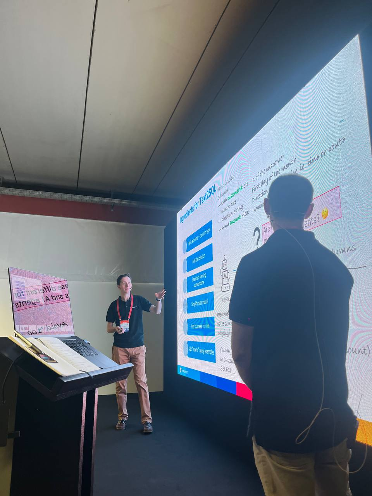

I've been speaking at Codemotion for the first time in October 2025 thanks to the work done over the last months at TeamSystem. With my colleague Mattia De Leo, we presented our recent work on building AI assistants based on knowledge graphs and large language models. The talk was well …
read more